Grove system
Seeed Studio's Grove system connects sensors with one four-wire cable:
GND, VCC, and two signal wires, the first of which (yellow) carries the module's main signal. Juno reaches a Grove
module in one of three ways, depending on the board, and its drivers take the socket's pin, so the same driver code works
with any pin-mapped shield or carrier.
Three ways to connect
Grove Base Shield, on the UNO boards

The Grove Base Shield is a passive adapter for the UNO headers, used
on the UNO R3, UNO WiFi Rev2, UNO R4 WiFi and UNO Q. Its A0-A3, D2-D8, UART and I2C sockets are ordinary UNO pins;
GroveBaseShield
names them. Seat it on the board's UNO headers and plug the module into a socket; the diagram is a socket map, not the
shield's physical layout:
+-------------------------------------------------------------+
| Grove Base Shield |
| |
| Digital [D2] [D3] [D4] [D5] [D6] [D7] [D8] getD2()... |
| Analog [A0] [A1] [A2] [A3] getA0()... |
| I2C [I2C] [I2C] [I2C] [I2C] SDA A4, SCL A5 |
| UART [UART] RX D0, TX D1 |
+------------------------------+------------------------------+
| seated on the UNO headers
+------------------------------v------------------------------+
| UNO R3 / UNO WiFi Rev2 / UNO R4 WiFi / UNO Q |
+-------------------------------------------------------------+
Grove DHT22 ---- cable ----> [D4]
Java: dht.read(shield.getD4(), reading, reading.length, frame, frame.length)
Grove Shield for Pi Pico, on the Raspberry Pi Pico 2 W
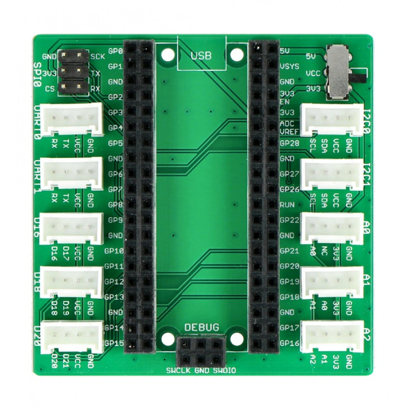
The Grove Shield for Pi Pico v1.0 is a
passive adapter for the Raspberry Pi Pico 2 W. GrovePicoShield
resolves its sockets to the Pico pins: D16, D18 and D20 are digital sockets; A0, A1 and A2 are ADC sockets; I2C0 is
the normal MCU.getI2c() bus on GP8/GP9; and I2C1, UART0, UART1 and SPI0 expose their signal pins individually. The
analog sockets always receive 3.3 V; set the power switch to 3.3 V for Grove modules that require it.
Use the digital or analog getters with the same pin-based drivers shown below. For an I2C module such as the Grove
SSD1315 OLED, pass shield.getI2c0() to the driver. The Pico board page
has the complete socket diagram and pin table.
Nano Connector Carrier, on the Nano ESP32
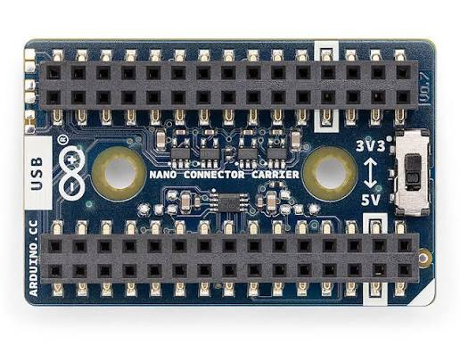
The Arduino Nano Connector Carrier holds the Nano ESP32 and adds four Grove sockets (two analog, UART and I2C) plus a
Qwiic connector; NanoConnectorCarrier names them. Set its input selector switch to 3.3 V for the Nano ESP32. See the
Nano ESP32 page for its full pin map.
The carrier seen from its connector side, USB cable at the bottom; * marks each Grove socket's yellow signal wire:
+---------------------------------------------+
| Grove I2C Grove UART |
| [ GND ] [ RX * ] |
| [ VCC ] [ TX ] |
| [ SDA ] A4 [ VCC ] |
| [ SCL *] A5 [ GND ] |
| +-------------+ |
| Qwiic | microSD | |
| [ I2C ] | slot | |
| A4/A5, 3.3 V | CS D4 | |
| +-------------+ |
| Grove A0/A1 Grove A2/A3 |
| [ GND ] [ A2 * ] |
| [ VCC ] [ A3 ] |
| [ A1 ] [ VCC ] |
| [ A0 * ] [ GND ] |
+-------------------[ USB ]-------------------+
Grove light sensor ---- cable ----> [Grove A0/A1]
Java: light.rawValue(carrier.getGroveA0())
Keep digital modules out of the carrier's I2C socket: its bus pull-ups hold a digital output between low and high.
Grove Sensors
Every pin-based driver below allocates nothing while it runs and takes the socket's pin as an argument, so it works the
same on the Grove Base Shield (shield.getD4(), shield.getA0(), ...), the Grove Shield for Pi Pico
(shield.getD16(), shield.getA0(), ...) and the Nano Connector Carrier (carrier.getGroveA0(),
carrier.getGroveA2()). The BMI088 uses the socket's I2C bus and the board's Clock instead. Create each driver once,
at startup.
The complete examples below use a Grove Base Shield on an UNO board unless stated otherwise. To use a Nano Connector
Carrier or the Grove Shield for Pi Pico, replace the shield socket getter with the corresponding carrier or Pico getter
and use MCU's Gpio, Clock and I2c as the driver requires.
Create each adapter with the board's Gpio, so its socket names are resolved for the selected board:
new GroveBaseShield() on an UNO board and
new GrovePicoShield() on a Pico 2 W or new NanoConnectorCarrier() on a Nano ESP32.
| Sensor | Socket | Driver | Reads |
|---|---|---|---|
| GPS (Air530) | Digital input / UART TX | GroveGpsAir530 |
NMEA GGA latitude, longitude, altitude, satellites and fix quality |
| Temperature and Humidity Sensor Pro (DHT22) | Digital | GroveDht22 |
Temperature and humidity, in tenths |
| Temperature and Humidity Sensor (DHT11) | Digital | GroveDht11 |
Whole-degree temperature and humidity |
| Temperature Sensor v1.2 | Analog | GroveTemperatureV12 |
Degrees Celsius from a thermistor |
| Light Sensor v1.2 | Analog | GroveLightV12 |
Light level as a percentage (LightDetector) |
| Sound Sensor v1.6 | Analog | GroveSoundV16 |
Raw microphone level |
| Gas sensor | Analog | GroveAnalogGas |
Raw gas reading |
| PIR Motion Sensor | Digital | GrovePirMotion |
Motion detected or not |
| BMI088 accelerometer and gyroscope | I2C | Bmi088 |
Acceleration, angular velocity and integrated heading |
| Ultrasonic Ranger | Digital | GroveUltrasonicRanger |
Distance in metres |
| Infrared emitter and receiver | Digital | GroveInfraredEmitter, GroveInfraredReceiver |
Infrared link to a LEGO RCX |
This table is the complete list of Grove sensor drivers currently exposed by Juno. The Grove OLED display is a separate I2C device rather than a sensor.
Grove displays
OLED 0.96-inch (SSD1315)
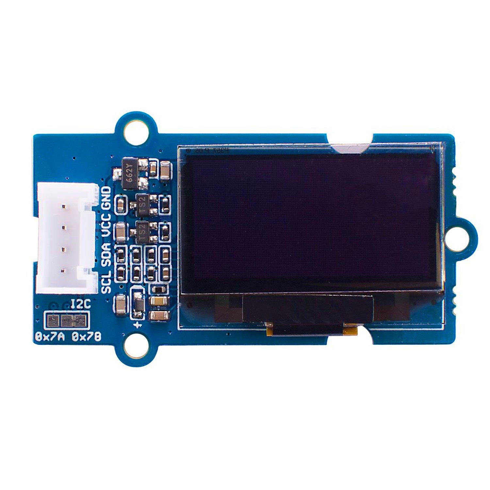
The Grove 0.96-inch 128x64 OLED uses I2C. On an UNO, connect it to the Base Shield's I2C socket; on the Pico 2 W,
connect it to the Grove Shield for Pi Pico's I2C0 socket and pass shield.getI2c0(). The display uses a caller-owned
1,024-byte framebuffer, so construct it once at startup. RaspberryPico2GroveOled
is the complete Pico example.
GPS Air530
The Grove GPS Air530 emits NMEA 0183 at 9,600 baud by default. Plug it into the Base Shield's D2 socket and connect
the module's TX wire to D2; the module's RX wire is not needed for reading fixes. On the Nano Connector Carrier or the
Pico shield, use a digital signal getter for the socket carrying the module's TX wire. GroveGpsAir530 uses a software
UART and keeps the USB serial console available for diagnostics. It writes latitude and longitude as signed millionths
of a degree, altitude as centimetres, satellite count and fix quality into caller-owned arrays:
GroveBaseShield shield = new GroveBaseShield();
Gpio gpio = MCU.getGpio();
GroveGpsAir530 gps = new GroveGpsAir530(gpio, MCU.getClock(), shield.getD2());
byte[] sentence = new byte[GroveGpsAir530.SENTENCE_CAPACITY];
int[] position = new int[GroveGpsAir530.POSITION_LENGTH];
gps.begin();
while (true) {
if (gps.readPosition(sentence, sentence.length, position, position.length, 5_000)) {
Serial.print("latitude=");
Serial.println(position[GroveGpsAir530.LATITUDE_MICRODEGREES]);
Serial.print("longitude=");
Serial.println(position[GroveGpsAir530.LONGITUDE_MICRODEGREES]);
}
}
The reader and its parsing path allocate nothing after construction. See GroveGpsAir530Reader
for a complete example.
Temperature and Humidity Sensor Pro (DHT22)
Temperature and humidity in tenths of a degree and of a percent. The caller owns the reading and frame buffers:
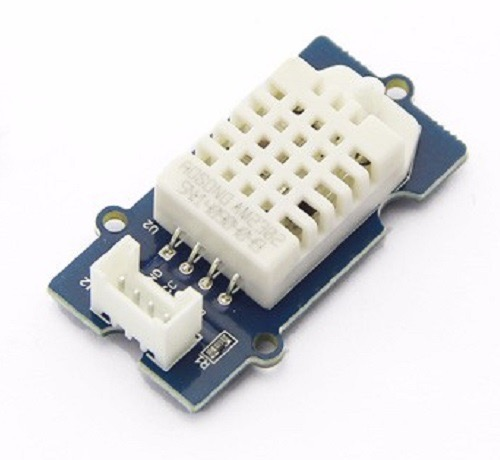
import io.github.jabrena.juno.hardware.device.grove.GroveBaseShield;
import io.github.jabrena.juno.hardware.device.grove.sensors.GroveDht22;
import io.github.jabrena.juno.hardware.serial.BaudRate;
import io.github.jabrena.juno.hardware.serial.Serial;
import io.github.jabrena.juno.util.Delay;
public final class GroveDht22Example {
public static void main(String[] args) {
GroveBaseShield shield = new GroveBaseShield();
GroveDht22 dht = new GroveDht22();
int[] reading = new int[GroveDht22.READING_LENGTH];
int[] frame = new int[GroveDht22.FRAME_LENGTH];
Serial.begin(BaudRate.BAUD_115200);
while (true) {
if (dht.read(shield.getD4(), reading, reading.length, frame, frame.length)) {
Serial.print("temperature tenths C=");
Serial.print(reading[GroveDht22.TEMPERATURE_TENTHS_CELSIUS]);
Serial.print(" humidity tenths %= ");
Serial.println(reading[GroveDht22.HUMIDITY_TENTHS_PERCENT]);
} else {
Serial.println("DHT22 read failed");
}
Delay.millis(2000);
}
}
}
GroveDht22Monitor
is the maintained version with formatted decimal output.
Temperature and Humidity Sensor (DHT11)
The DHT11 reports whole numbers; it reads the same way as the DHT22:
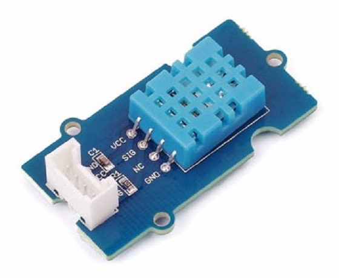
import io.github.jabrena.juno.hardware.device.grove.GroveBaseShield;
import io.github.jabrena.juno.hardware.device.grove.sensors.GroveDht11;
import io.github.jabrena.juno.hardware.serial.BaudRate;
import io.github.jabrena.juno.hardware.serial.Serial;
import io.github.jabrena.juno.util.Delay;
public final class GroveDht11Example {
public static void main(String[] args) {
GroveBaseShield shield = new GroveBaseShield();
GroveDht11 dht = new GroveDht11();
int[] reading = new int[GroveDht11.READING_LENGTH];
int[] frame = new int[GroveDht11.FRAME_LENGTH];
Serial.begin(BaudRate.BAUD_115200);
while (true) {
if (dht.read(shield.getD3(), reading, reading.length, frame, frame.length)) {
Serial.print("temperature C=");
Serial.print(reading[GroveDht11.TEMPERATURE_CELSIUS]);
Serial.print(" humidity %= ");
Serial.println(reading[GroveDht11.HUMIDITY_PERCENT]);
} else {
Serial.println("DHT11 read failed");
}
Delay.millis(2000);
}
}
}
Temperature Sensor v1.2
A 100-kilohm thermistor divider; the driver converts the ADC count to degrees Celsius with Seeed's B constant:
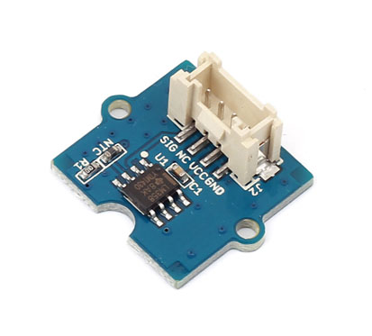
import io.github.jabrena.juno.hardware.MCU;
import io.github.jabrena.juno.hardware.device.grove.GroveBaseShield;
import io.github.jabrena.juno.hardware.device.grove.sensors.GroveTemperatureV12;
import io.github.jabrena.juno.hardware.serial.BaudRate;
import io.github.jabrena.juno.hardware.serial.Serial;
import io.github.jabrena.juno.util.Delay;
public final class GroveTemperatureExample {
public static void main(String[] args) {
GroveBaseShield shield = new GroveBaseShield();
GroveTemperatureV12 temperature = new GroveTemperatureV12();
Serial.begin(BaudRate.BAUD_115200);
while (true) {
Serial.print("temperature C=");
Serial.println(temperature.celsius(shield.getA0()));
Delay.millis(1000);
}
}
}
Light Sensor v1.2
A LightDetector bound to its socket. The light value is the percentage of the ADC full scale: relative
brightness, not illuminance. Pass GroveLightV12.ADC_12_BIT as the ADC full-scale argument on the Nano ESP32:
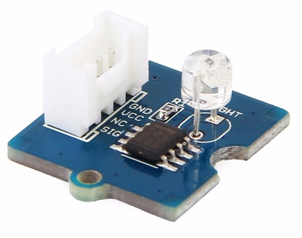
import io.github.jabrena.juno.hardware.device.grove.GroveBaseShield;
import io.github.jabrena.juno.hardware.device.grove.sensors.GroveLightV12;
import io.github.jabrena.juno.hardware.serial.BaudRate;
import io.github.jabrena.juno.hardware.serial.Serial;
import io.github.jabrena.juno.robotics.LightDetector;
import io.github.jabrena.juno.util.Delay;
public final class GroveLightExample {
public static void main(String[] args) {
GroveBaseShield shield = new GroveBaseShield();
LightDetector light = new GroveLightV12(shield.getA1(),
GroveLightV12.ADC_10_BIT);
Serial.begin(BaudRate.BAUD_115200);
while (true) {
Serial.print("relative light %= ");
Serial.println(light.getLightValue());
Delay.millis(500);
}
}
}
Sound Sensor v1.6
An ADC sample of the amplified microphone signal, not a decibel measurement:
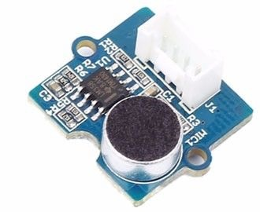
import io.github.jabrena.juno.hardware.device.grove.GroveBaseShield;
import io.github.jabrena.juno.hardware.device.grove.sensors.GroveSoundV16;
import io.github.jabrena.juno.hardware.serial.BaudRate;
import io.github.jabrena.juno.hardware.serial.Serial;
import io.github.jabrena.juno.util.Delay;
public final class GroveSoundExample {
public static void main(String[] args) {
GroveBaseShield shield = new GroveBaseShield();
GroveSoundV16 sound = new GroveSoundV16();
Serial.begin(BaudRate.BAUD_115200);
while (true) {
Serial.print("microphone ADC=");
Serial.println(sound.rawValue(shield.getA2()));
Delay.millis(100);
}
}
}
Gas sensor
The analog output of a Grove gas sensor. Useful for watching changes; a gas concentration needs the particular sensor's warm-up and calibration procedure:
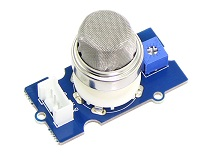
import io.github.jabrena.juno.hardware.device.grove.GroveBaseShield;
import io.github.jabrena.juno.hardware.device.grove.sensors.GroveAnalogGas;
import io.github.jabrena.juno.hardware.serial.BaudRate;
import io.github.jabrena.juno.hardware.serial.Serial;
import io.github.jabrena.juno.util.Delay;
public final class GroveGasExample {
public static void main(String[] args) {
GroveBaseShield shield = new GroveBaseShield();
GroveAnalogGas gas = new GroveAnalogGas();
Serial.begin(BaudRate.BAUD_115200);
while (true) {
Serial.print("gas ADC=");
Serial.println(gas.rawValue(shield.getA3()));
Delay.millis(500);
}
}
}
PIR Motion Sensor
A digital output that goes high on motion. Configure the socket once, then poll it. On the Nano Connector Carrier, use an analog socket rather than the I2C one:
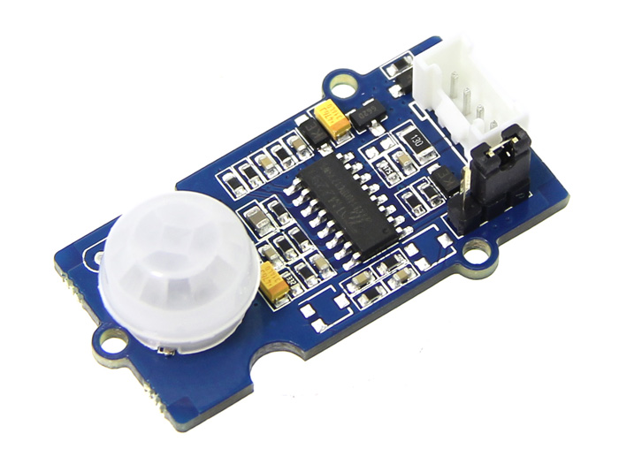
import io.github.jabrena.juno.hardware.device.grove.GroveBaseShield;
import io.github.jabrena.juno.hardware.device.grove.sensors.GrovePirMotion;
import io.github.jabrena.juno.hardware.serial.BaudRate;
import io.github.jabrena.juno.hardware.serial.Serial;
import io.github.jabrena.juno.util.Delay;
public final class GrovePirExample {
public static void main(String[] args) {
GroveBaseShield shield = new GroveBaseShield();
GrovePirMotion pir = new GrovePirMotion();
pir.begin(shield.getD2());
Serial.begin(BaudRate.BAUD_115200);
while (true) {
Serial.print("motion=");
Serial.println(pir.motionDetected(shield.getD2()));
Delay.millis(100);
}
}
}
BMI088 accelerometer and gyroscope
The Grove 6-Axis Accelerometer & Gyroscope uses two I2C addresses on the same bus. Bmi088 implements the
Accelerometer, Gyroscope and SampleProvider contracts; it is configured for ±3 g and ±2000 degrees per second.
Heading is integrated from the Z-axis gyro and drifts over time. Keep the module still while
recalibrateOffset() runs.
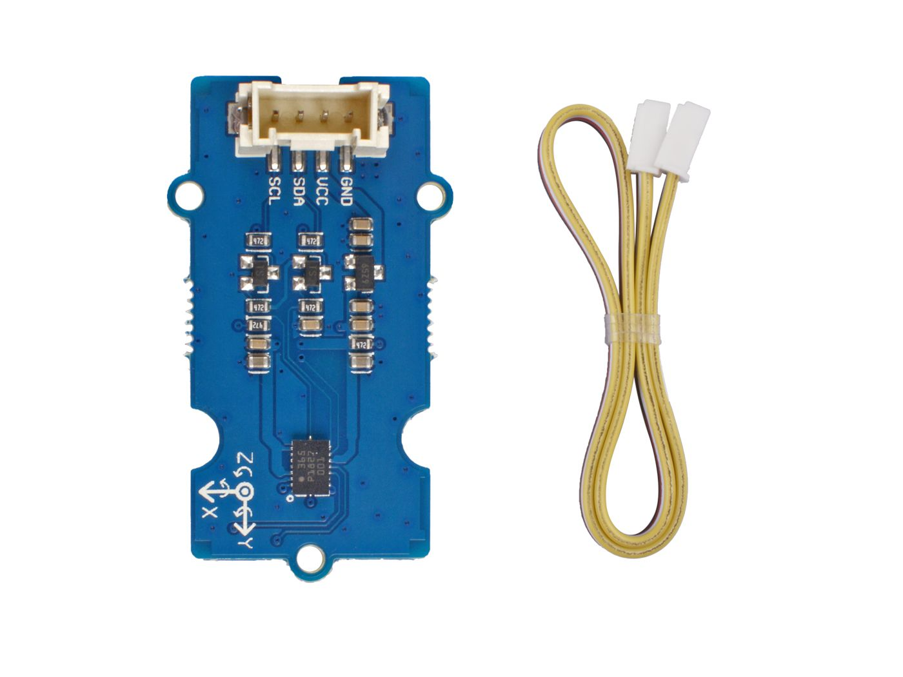
import io.github.jabrena.juno.hardware.device.imu.Bmi088;
Bmi088 imu = new Bmi088();
float[] acceleration = new float[imu.sampleSize()];
imu.recalibrateOffset();
imu.fetchSample(acceleration, 0);
int heading = imu.getAngle();
Ultrasonic Ranger
The Grove Ultrasonic Ranger measures the time for an echo and returns metres, or Float.NaN when no echo arrives:
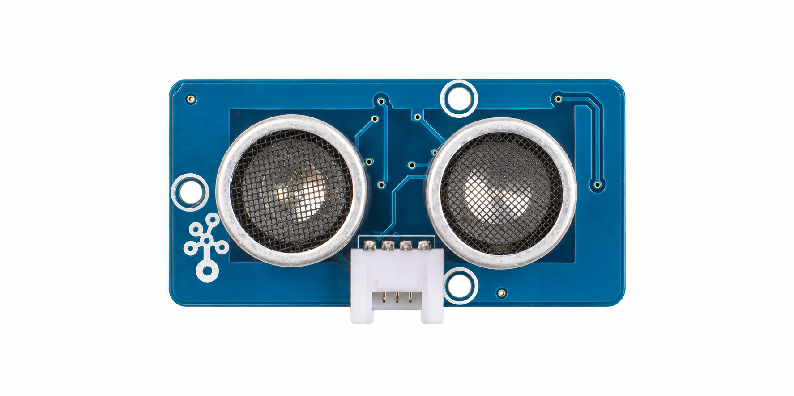
import io.github.jabrena.juno.hardware.device.grove.GroveBaseShield;
import io.github.jabrena.juno.hardware.device.grove.sensors.GroveUltrasonicRanger;
import io.github.jabrena.juno.hardware.serial.BaudRate;
import io.github.jabrena.juno.hardware.serial.Serial;
import io.github.jabrena.juno.util.Delay;
public final class GroveUltrasonicExample {
public static void main(String[] args) {
GroveBaseShield shield = new GroveBaseShield();
GroveUltrasonicRanger ranger = new GroveUltrasonicRanger(
MCU.getGpio(), MCU.getClock(), shield.getD5());
Serial.begin(BaudRate.BAUD_115200);
while (true) {
Serial.print("distance metres=");
Serial.println(ranger.getRange());
Delay.millis(100);
}
}
}
Infrared emitter and receiver
A Grove infrared emitter and receiver form the infrared link to a LEGO Mindstorms RCX brick. Wrap each socket's pin,
then construct an RcxLink from both modules and pass it to RemoteRcx:


import io.github.jabrena.juno.hardware.device.grove.GroveBaseShield;
import io.github.jabrena.juno.hardware.device.grove.sensors.GroveInfraredEmitter;
import io.github.jabrena.juno.hardware.device.grove.sensors.GroveInfraredReceiver;
import io.github.jabrena.juno.hardware.serial.BaudRate;
import io.github.jabrena.juno.hardware.serial.Serial;
import io.github.jabrena.juno.remote.lego.rcx.RcxChannel;
import io.github.jabrena.juno.remote.lego.rcx.RcxLink;
import io.github.jabrena.juno.remote.lego.rcx.RemoteRcx;
import io.github.jabrena.juno.util.Delay;
public final class GroveRcxExample {
public static void main(String[] args) {
GroveBaseShield shield = new GroveBaseShield();
GroveInfraredReceiver receiver = new GroveInfraredReceiver(shield.getD4());
GroveInfraredEmitter emitter = new GroveInfraredEmitter(shield.getD3());
RcxLink link = new RcxLink(emitter, receiver);
RemoteRcx rcx = new RemoteRcx(link, RcxChannel.CHANNEL_1);
Serial.begin(BaudRate.BAUD_115200);
while (true) {
int millivolts = rcx.getBattery().millivolts();
Serial.print("RCX battery mV=");
Serial.println(millivolts);
Delay.millis(1000);
}
}
}
See LEGO for driving the brick, and the Nano ESP32 page for a complete example.